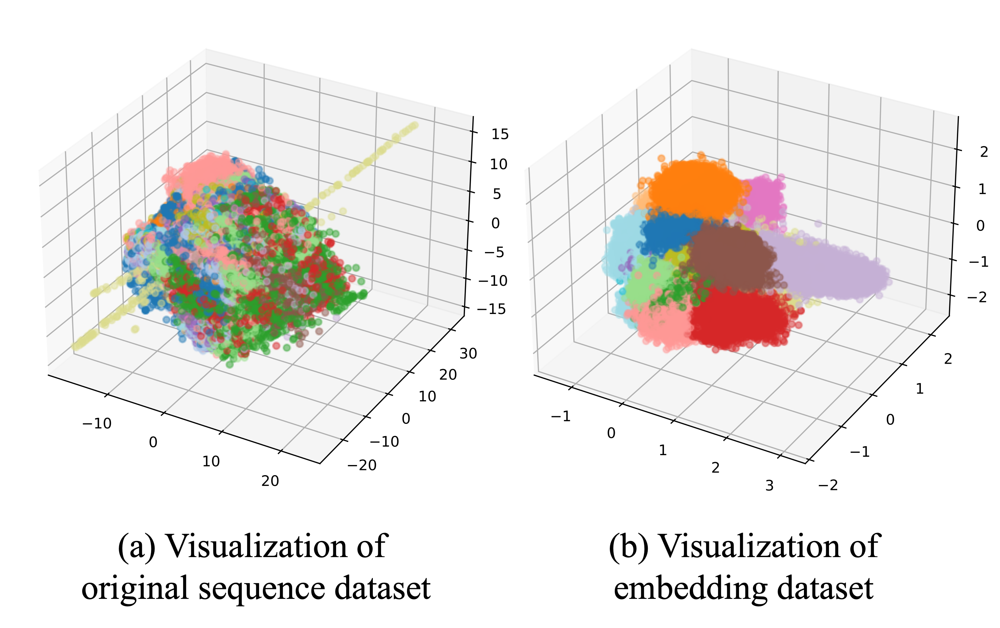

k012123600@gmail.com
20-02-2001

As VANET connectivity grows, malfunctions and malicious data injections in basic safety messages (BSMs) can cause severe disruptions, necessitating reliable misbehavior detection.
Existing unsupervised detection methods flag anomalies effectively but lack fine-grained misbehavior classification to drive tailored countermeasures.
Proposed Research: We propose HiMSELF(Hierarchical Misbehavior Classification with Sequence Embedding by Latent Features), a system that systematically organizes all misbehavior types into a hierarchical framework for high-accuracy classification.
Train a deep learning model on multi-class misbehavior data to extract latent embeddings that effectively capture the distinguishing characteristics of each misbehavior type.
Then, apply hierarchical clustering to these embeddings to uncover the intrinsic relationships between misbehavior types. This clustering process enables the construction of a hierarchical classification model that organizes misbehaviors into progressively finer-grained categories.
Based on this hierarchy, implement a two-stage classification pipeline: (i) predict the high-level group to which a given BSM sequence belongs, and then (ii) identify the specific misbehavior type within that group.
In experiments on 19 misbehavior types, HiMSELF achieved an average F1-score of 0.9918, outperforming existing approaches and demonstrating its potential for robust security in cooperative intelligent transportation systems.